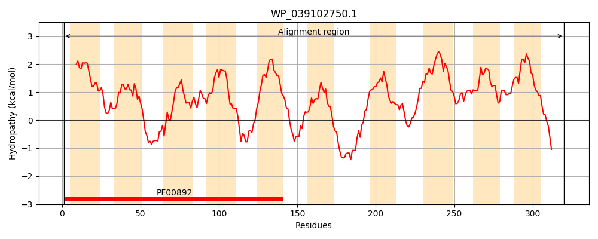
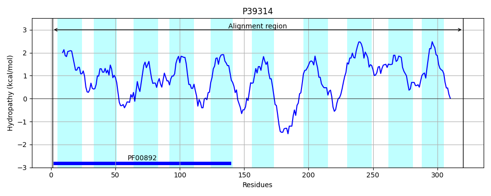
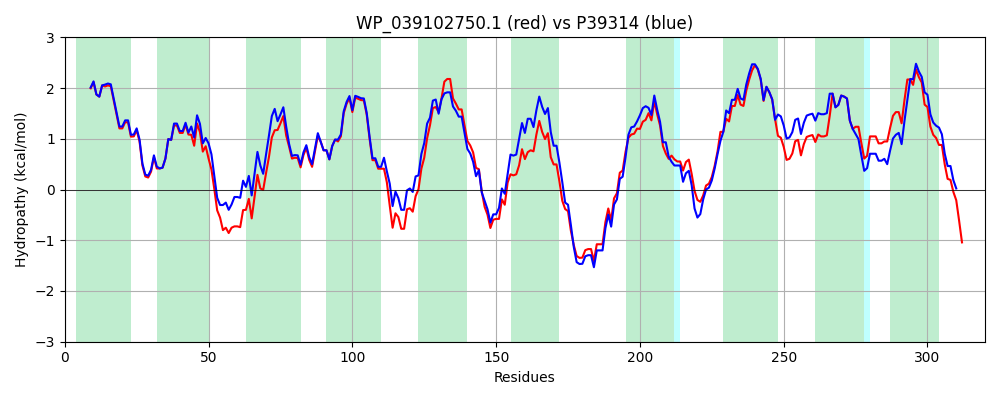

Hit Accession: P39314
Hit TCID: 2.A.7.3.19
Hit Description: gnl|BL_ORD_ID|10255 gnl|TC-DB|P39314|2.A.7.3.19 Inner membrane protein ytfF OS=Escherichia coli (strain K12) GN=ytfF PE=1 SV=2
Mach Len: 320
e:0.000000
Query TMS Count : 10
Hit TMS Count: 10
TMS-Overlap Score: 9.450000
Predicted Substrates:CHEBI:6171;L-alanine
BLAST Alignment:
Score: 1374 , Bit scores: 533 bits, E-value: 0.0e+00, Alignment length: 320, Percentage identity: 82
Query: 1 MVSGVLYALLAGLMWGLIFVGPLLVPEYPAMLQSMGRYLALGLIALPLAWLGRARLRQLSRNDWWTALGLTMMGNLIYYACLASAIQRTGAPVSTMIIGTLPVVLPVFANLLYSQRDGKLPWRRLFPALVCIAVGLICVNVAELRQGLPDFSPWRYGSGIALALGSVACWAWYALRNARWLRENPHQPPMMWATAQALVTLPVSLAGYLAACAWLHGQQAGFPLPFGPRPAVFITLMLAIAVLCSWVGALCWNIASQRLPTVILGPLIVFETLAGLLYTFLLRQSLPPLLTLSGILLLVLGVVSAVRARPEKPMLQPLTD 320
M+SGVLYALLAGLMWGLIFVGPL+VPEYPAMLQSMGRYLALGLIALP+AWLGR RLRQL+R DW TAL LTMMGNLIYY CLASAIQRTGAPVSTMIIGTLPVV+PVFANLLYSQRDGKL W +L PAL+CI +GL CVN+AEL GLPDF RY SGI LAL SV CWAWYALRNARWLRENP + PMMWATAQALVTLPVSL GYL AC WL+ Q F LPFGPRP VFI+LM+AIAVLCSWVGALCWN+ASQ LPTVILGPLIVFETLAGLLYTFLLRQ +PPL+TLSGI LLV+GVV AVRA+PEKP+ + +++
Sbjct: 1 MISGVLYALLAGLMWGLIFVGPLIVPEYPAMLQSMGRYLALGLIALPIAWLGRVRLRQLARRDWLTALMLTMMGNLIYYFCLASAIQRTGAPVSTMIIGTLPVVIPVFANLLYSQRDGKLAWGKLAPALICIGIGLACVNIAELNHGLPDFDWARYTSGIVLALVSVVCWAWYALRNARWLRENPDKHPMMWATAQALVTLPVSLIGYLVACYWLNTQTPDFSLPFGPRPLVFISLMVAIAVLCSWVGALCWNVASQLLPTVILGPLIVFETLAGLLYTFLLRQQMPPLMTLSGIALLVIGVVIAVRAKPEKPLTESVSE 320 | Protein Hydropathy Plots: |
|---|
|  |  |
Pairwise Alignment-Hydropathy Plot:
|
|---|
|  |